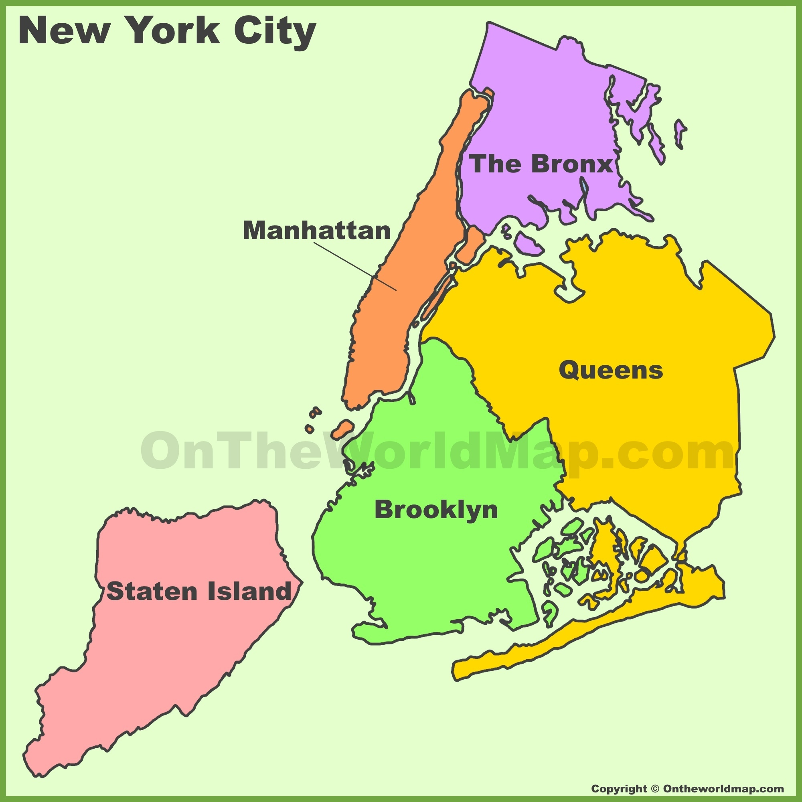
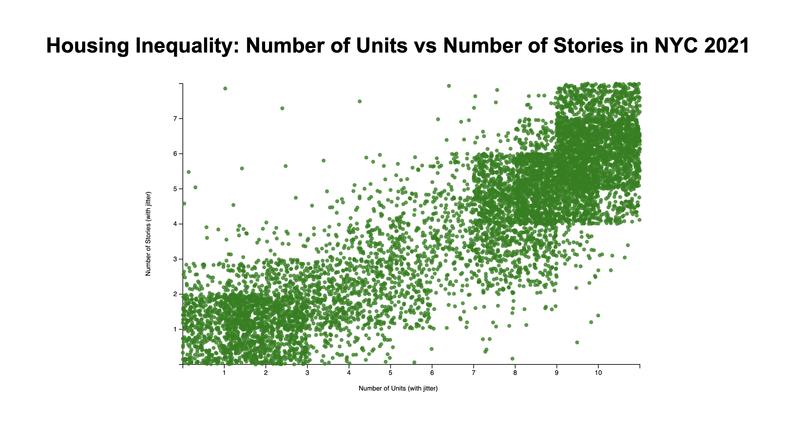

Our project analyzes housing inequality in major American cities, with a primary focus on New York. We aim to uncover trends in housing prices, demographic data, and public infrastructure that illustrate how housing inequality impacts different regions.
This scatterplot visualizes housing inequality in New York City in 2021 by showing the relationship between number of units in a building (x-axis) and the number of stories (y-axis). Each green dot represents a housing unit, with slight jitter applied to avoid overplotting.
